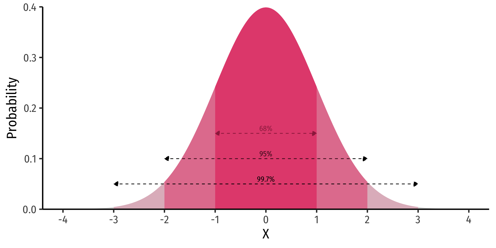
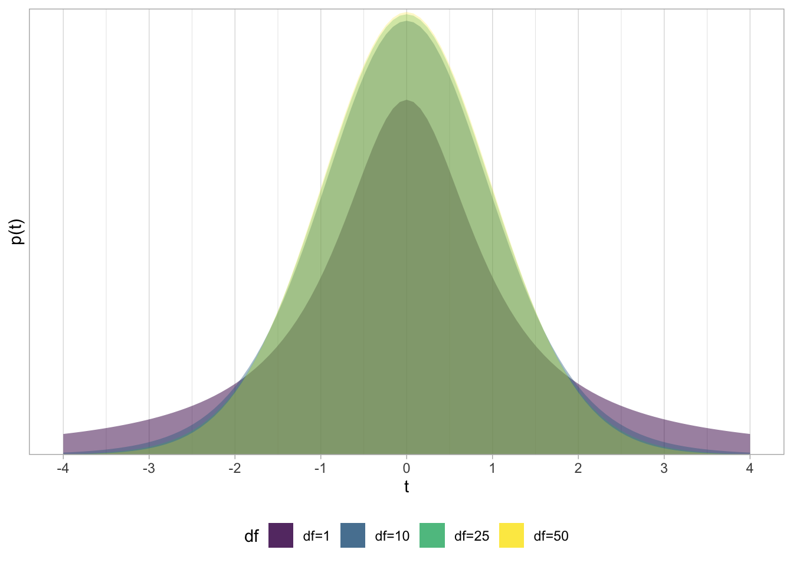
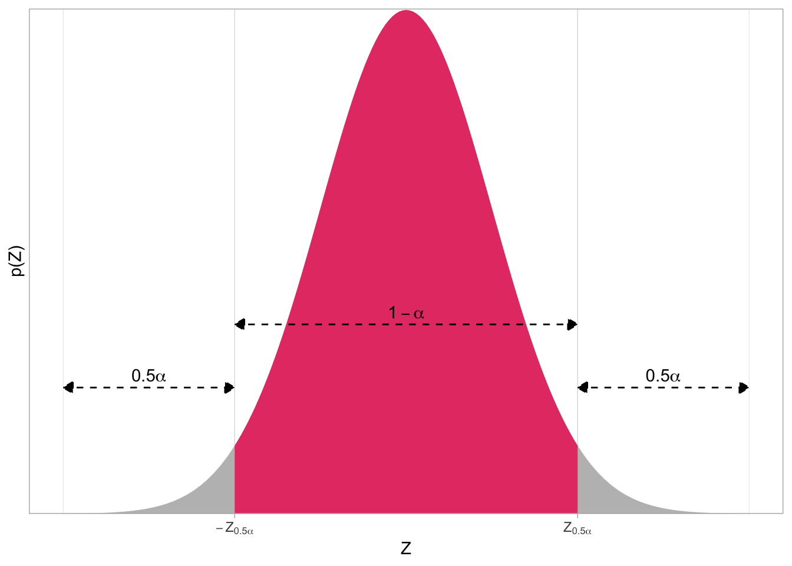
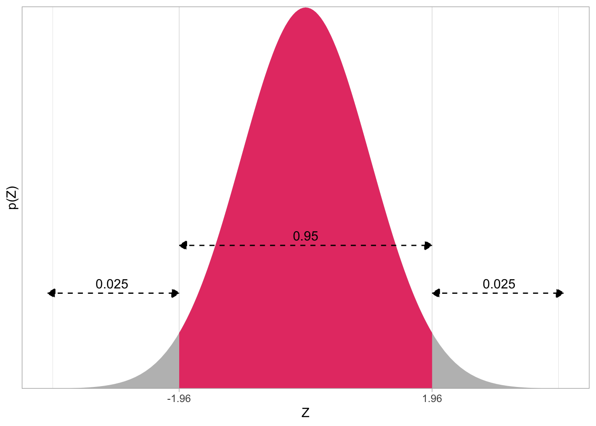

In class, we learned the basics behind inferential statistics–p-values, confidence intervals, hypothesis testing–via empirical simulation of many samples permuted from our existing data. We took our sample, ran 1,000 simulations by permutation of our sample without replacement1, calculated the statistic (\(\hat{\beta}_0\), the slope) of each simulation; this gave us a (sampling) distribution of our sample statistics, and then found the probability on that distribution that we would observe our actual statistic in our actual data – this is the \(p\)-value.
Classically, before the use of computers that could run and visualize 1,000s of simulations within seconds,2 inferential statistics was taught using theoretical distributions. Essentially, we calculate a test-statistic by normalizing our finding against a theoretical (null) sampling distribution of our sample statistic, and find p-values by estimating the probability of observing that statistic on that theoretical distribution. These distributions are almost always normal or normal-like distributions. The distribution that we almost always use in econometrics is the (Student’s) \(t\)-distribution.
Furthermore, testing the null hypothesis \(H_0: \,\beta_1=0\), is not the only type of hypothesis test, nor is the slope the only statistic we can test. In fact, there are many different types of hypothesis tests that are well-known and well-used, we focused entirely on regression (since that is the largest tool of the course).
This appendix will give you more background on the theory of inferential statistics, and is more in line with what you may have learned in earlier statistics courses.
Inferential Statistics Basics
It is important to remember several statistical distributions, tools, and facts. Most of them have to do with the normal distribution. If \(X\) is normally distributed with mean \(\mu\) and standard deviation \(\sigma\):
\[X \sim N(\mu, \sigma)\]
Then recall the 68-95-99.7 empirical rule, that:
\(P(\mu-1 \sigma \leq X \leq \mu+ 1\sigma) \approx 0.68\)
\(P(\mu-2 \sigma \leq X \leq \mu+ 2\sigma) \approx 0.95\)
\(P(\mu-3 \sigma \leq X \leq \mu+ 3\sigma) \approx 0.997\)
Again, in English: “68% of the observations fall within 1 standard deviation of the mean; 95% fall within 2 standard deviations of the mean, and 99.7% fall within 3 standard deviations of the mean.”

Again, we can standardize any normally-distributed random variable by finding the Z-score of each observation:
\[Z=\frac{X_i - \mu}{\sigma}\]
This ensures the mean will be 0 and standard deviation will be 1, i.e. we have the standard normal distribution. Thus, \(Z\) is the number of standard deviations above \((+)\) or below \((-)\) the mean an observation is.
We can use \(Z\)-scores to find the probability of any range of observations of \(X\) occuring in the distribution.
pnorm(-2, mean =0, sd =1, lower.tail =TRUE) # area to left of -2
[1] 0.02275013
pnorm(2, mean =0, sd =1, lower.tail =TRUE) # area to left of 2
[1] 0.9772499
pnorm(2, mean =0, sd =1, lower.tail =FALSE) # area to RIGHT of 2
[1] 0.02275013
pnorm(2, mean =0, sd =1, lower.tail =TRUE)-pnorm(-2, mean =0, sd =1, lower.tail =TRUE) # area between -2 and 2
[1] 0.9544997
The Central Limit Theorem
Inferential statistics can be summarized in 2 sentences:
There are unknown parameters that describe a population distribution that we want to know. We use statistics that describe a sample to estimate the population parameters.
Recall there is an element of randomness in our sample statistics due to sampling variability. For example, if we take the mean of one sample, \(\bar{x}\), and then take the mean of a different sample, the \(\bar{x}\)’s will be slightly different. We can conceive of a distribution of \(\bar{x}\)’s across many different samples, and this is called the sampling distribution of the statistic \((\bar{x})\).
Via the sampling distribution, the sample statistic \((\bar{X})\) itself is distributed with
mean \(E[\bar{x}]=\mu_X\) (the true population mean)
standard deviation \(\sigma_{\bar{x}}\)
Central Limit Theorem: with large enough sample size (\(n\geq30\)), the sampling distribution of a sample statistic is approximately normal3
Thus, the sampling distribution of the sample mean (\(\bar{x}\)):
The second term we call the standard error of the sample mean4. Note that it takes the true standard deviation of the population (\(\sigma_X\))5 and divides it by the square root of the sample size, \(\sqrt{n}\).
Thus if we know the true population standard deviation (\(\sigma_X\)) then we can simply use the normal distribution for confidence intervals and hypothesis tests of a sample statistic. Since we often do not, we need to use another distribution for inferential statistics, often the \(t\)-distribution.
If We Don’t Know \(\sigma\): The Student’s \(t\)-Distribution
We rarely, if ever, know the true population standard deviation for variable \(X\), \(\sigma_X\). Additionally, we sometimes have sample sizes of \(n < 30\). If either of these conditions are true, we cannot use leverage the Central Limit Theorem and simplify with a standard normal distribution. Instead of the normal distribution, we use a Student’s t-Distribution6
\(t\) is functionally equivalent to the idea of a \(Z\)-score, with some slight modifications:
\(\bar{x}\) is our estimated statistic (e.g. sample mean)
\(\mu\) is the true population parametner (e.g. population mean)
\(s\) is the sample standard deviation
\(n\) is the sample size
\(t\)-scores similarly measure the number of standard deviations an observation is above or below the mean.
The other main difference between normal distributions/\(Z\)-scores and \(t\) distributions /\(t\)-scores is that \(t\) distributions have \(n-1\) degrees of freedom.7
\[t \sim t_{n-1}\]

The standard \(t\)-distribution looks normal-ish, with a mean of 0, but with more area in the tails of the distribution. The exact shape depends on the degrees of freedom \((n-1)\). As \(\uparrow n\), \(\uparrow df\), the \(t\)-distribution approximates a normal distribution.
By convention, in regression we always use \(t\)-distributions for confidence intervals and hypothesis tests. For nearly all of the confidence intervals and hypothesis tests below, we functionally replace \(Z\) with \(t\).
Confidence Intervals
A confidence interval describes the range of estimates for a population parameter in the form:
\[(\text{estimate} - \text{margin of error}, \, \text{estimate} + \text{margin of error})\]
Our confidence level is \(1-\alpha\)
\(\alpha\) again is the “significance level”, the probability that the true population parameter is not within our confidence interval8
Typical confidence levels: 90%, 95%, 99%
A confidence interval tells us that if we were to conduct many samples, (\(1-\alpha\))% would contain the true population parameter within the interval
To construct a confidence interval, we do the following:
Calculate the sample statistic.
Find \(Z\)-score that corresponds to desired confidence level.9 We need to find what are called the “critical values” of \(Z\), which we will call \(Z_{0.5\alpha}\) on the normal distribution that puts (\(1-\alpha\)) probability between \(\pm Z_{0.5\alpha}\) and \(0.5\alpha\) in each of the tails of the distribution. The distribution would look like this:

The confidence interval between the two \(Z\)-scores \(-Z_{0.5\alpha}\) and \(Z_{0.5\alpha}\) contains the desired \((1-\alpha)%\) of observations
The area beyond each \(Z\)-score contains \(0.5\alpha\)% of observations in each direction, for a total of \(\alpha\)% beyond the critical values of \(Z\)
Note that the image above is abstract. So for example, if we wanted a (typical) 95% confidence interval with \(\alpha=0.05\), the critical value(s) of \(Z\) are \(\pm 1.96\)10, and looking on the distribution:

The critical values of \(Z\) are often given in \(Z\)-tables, which you can find in classical statistics textbooks or online. Critical values of \(Z\) for common confidence intervals values are well known:
Confidence Level
\(\alpha\)
\(\pm Z_{0.5\alpha}\)
90%
0.10
\(\pm 1.645\)
95%
0.05
\(\pm 1.96\)
99%
0.01
\(\pm 2.58\)
Calculate the margin of error (MOE)
The margin of error is the critical value of \(Z\) times the standard error of the estimate (\(\sigma\)).
\[MOE=Z_{0.5\alpha}\sigma\]
Construct the confidence interval
The confidence interval is simply our estimate plus and minus the margin of error.
Intepret the confidence interval in the context of the problem
“We estimate with [1-alpha]% confidence that the true [population parameter] is between [lowerbound] and [upperbound]”.
Footnotes
That is, for each simulation, we randomly selected observations from our existing sample to be in the simulation, and then did not put that observation back in the pool to possibly be selected again.↩︎
If samples are i.i.d. (independently and identically distributed if they are drawn from the same population randomly and then replaced) we don’t even need to know the population distribution to assume normality↩︎
Instead of the “standard deviation”. “Standard error” refers to the sampling variability of a sample statistic, and is always talking about a sampling distribution.↩︎
“Student” was the penname of William Sealy Gosset, who has one of the more interesting stories in statistics. He worked for Guiness in Ireland testing the quality of beer. He found that with small sample sizes, normal distributions did not yield accurate results. He came up with a more accurate distribution, and since Guiness would not let him publish his findings, published it under the pseudonym of “Student.”↩︎
Degrees of freedom, \(df\) are the number of independent values used for the calculation of a statistic minus the number of other statistics used as intermediate steps. For sample standard deviation \(s\), we use \(n\) deviations \((x_i-\bar{x})\) and 1 parameter \((\bar{x})\), hence \(df=n-1\)↩︎
Equivalently, \(\alpha\) is the probability of a Type I error: a false positive finding where we incorrectly reject a null hypothesis when it the null hypothesis is in fact true.↩︎
Of course, if we don’t know the population \(\sigma\), we need to use the \(t\)-distribution and find critical \(t\)-scores instead of \(Z\)-scores. See above.↩︎
Note this is the precise value behind the rule of thumb that 95% of observations fall within 2 standard deviations of the mean!↩︎